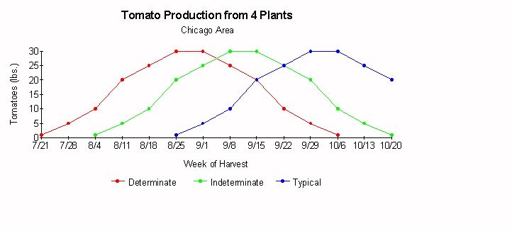

Gardeners in the Midwest love tomatoes. There are varieties appropriate to grow in every situation, from indoors (Tiny Tim) to patios to porches to a sunny nook in the back yard to friendly competitions for largest or heaviest tomato. Specialty tomato varieties are usually grown from seed, but most people are content to select from a limited range of seedling varieties offered by the local garden centers. Usually, there is one paste tomato like Roma, and a small assortment of hybrids like Celebrity, Better Boy, Big Beef, Big Boy, or Champion. Garden Center buyers have selected varieties to sell based on past sales and advice from suppliers. I believe that advice to be poor advice, and in this article, I will try to show why it is that Chicago Area and similarly situated gardeners ask the same question in August of every year: "Why aren't my tomatoes turning red?"
There are two types of determinate tomato varieties. This fact is not generally found in garden guides or in seed catalogs. In fact, one major catalog house has dropped all determinate and indeterminate designations, probably because they are confusing.
A determinate is usually defined as a plant whose vines terminate in a flower cluster. Often referred to as a bush type which does not require staking, these tomatoes are said to ripen over a two to three week period, maturing in 50 to 60 days. Garden Center customers avoid these like the plague, because of the inaccurate description, therefore the seedlings are not stocked.
A second type of determinate is known as a vigorous or strong determinate which continues to grow and set fruit throughout the season. Its fruit is said to mature over a four to six week period beginning in 60 to 70 days. Once again, the description is inadequate. These plants look and produce like indeterminates, but earlier in the season. They are designed to mature their fruits before all the warm weather is gone, but do not stop producing after a set number of days. They are perfect for Midwest gardeners, but are not available to purchase as seedlings. One can only guess about the mentality of some decision makers in the business of selling plants at retail.
Indeterminate varieties continue to vine after fruit set, form large plants requiring stakes or cages, and mature their fruit in 70 to 85 days. These are the only plants sold in this area. Within each of these types, there are early, mid, and late maturing varieties, bringing the total number of non-specialized types of tomatoes to nine. It is no wonder that the gardener is confused by seed catalogs which fail to make these distinctions clear.

In the above chart, the red line shows the harvest of ripe tomatoes from four "vigorous determinate" plants each week in my garden. The seeds were sown on March 15th (eight weeks before last frost). The final one pound of mature fruit is harvested on October 6th, the average date of our first frost, and the plants are then composted, i.e. I never have to eat green tomatoes unless I want to do so.
The green line shows the harvest of ripe tomatoes from four "indeterminate" plants each week in my garden. The seeds were sown on March 15th. The potential of these four plants is not realized because 16 lbs. of fruit that would have matured are destroyed by frost on 10/6.
The blue line shows the harvest of ripe tomatoes from four "indeterminate" plants purchased as seedlings from the local garden center. These seedlings are typically about 6 to 8 inches tall, and the seeds were probably sown on April 1st. They are fully a month behind my own plants because of the sowing date, and because they are root bound in 2" pots. As a result, 50% (91 lbs.) of their production potential is destroyed by frost on 10/6. Note that this is the only type of tomato offered for sale in this area. It is no wonder that gardeners have no tomatoes in August. When the bulk of these tomatoes are ripening in September, the nights have turned cool averaging in the fifties (ºF). Everyone knows that tomatoes ripen in the hot sun, but the warmth of July and August is not available to the mature tomatoes on these plants.
First, select the variety whose performance matches your season. I trialled 50 varieties until I found the one that met my criteria for disease resistance, medium (10 to 12 ounce uniform) size, blemish-free fruit, slipped easily from the vine, and had a high sugar content, and which matured during my own period of warm sunny weather. If you live in the Chicago area, you may be interested to know that Ultra Sweet VFT, 62 days, (a proprietary product of Stokes Seeds, Inc.) is the only tomato that I grow, even now. Elsewhere, there is another variety that is perfect for you, but finding out which one to grow will take some good guesses and certainly a good set of harvest records on the ones you decide to trial. Be sure to note the quantity of tomatoes lost at frost time in your records. I grew these tomatoes for 5 years under contract to local restaurants where the blemish-free criteria was paramount. Remaining criteria to the contracts were early harvest followed by taste. We found that extra early tomatoes of the determinate bush types delivered only 50% blemish-free fruit, and never delivered on "sugar content". Indeterminate types met met much of the criteria but always failed on at least two counts. Worse yet, these plants came into full production when the market was flooded with field grown fruit at low prices.
Second, you must start your plants from seed eight weeks before your last frost date. Even if your local garden center carries the variety you wish to try, it will be weak and spindly, and considerably behind schedule.
Finally, the manner in which you bring your seedlings up to the setting-out stage is of critical importance. Ideally, the plants will be about 14 to 16 inches tall with dark green leaves and sturdy stalks almost 5/8 inch diameter so that no protection or staking is required to insure initial survival. The roots of the plants ready to set-out will be in a phase of rapid growth. How is this possible? These seedlings need strong light at least 14 hours per day. The tops should be gently brushed on a daily basis to persuade them to grow hard outer cells on their trunks. Ventilation should be constant 24 hours per day, but you do not want to see actual leaf movement. Seedlings must be potted-on when any portion of their leaves extends over and beyond the sides of their pots. At the time of setting-out, my seedlings are always in 8" pots. They are dark green and very sturdy. When I give a few plants to other people, they are always amazed at the size and shape and health of the plant.
Again and again, in magazine articles, here on the internet, Cooperative Extension factsheets, and TV gardening shows, I see the advice given to plant the seedlings almost horizontally in trenches, on the grounds that roots will grow along the entire stem. This advice is imbecillic, except that it will help to salvage a root-bound leggy seedling that really belongs in the trash. I have no intention of burying a plant in wet cold soil. I set the root ball from the 8" pot in a shallow depression in the soil. I then mound up the soil around the root ball continuing all the way up to the first branches. The sun warmed mound stimulates the roots into rapid growth. The mounded soil further supports the plants in strong winds for a few days until the roots take over that responsibility.
I do not pinch suckering growth. Keep in mind that tomatoes ripen in the heat from the sun, but not in direct sunlight, so a lot of pruning prevents the plant from shading its fruit. My plants are spaced on 36" centers for good air circulation and grow straight up inside 24" diameter cages of concrete reinforcing mesh. When they reach the top of the cages, I trim them a little bit so that the plants do not become too top-heavy. I allow the plants to do pretty much as they please as long as they stay inside the cages where the fruits will be shaded.
Notes: Data presented in the illustration add up to 182 lbs. of fruit harvested from four plants, or about 45½ lbs. per plant. This was done for ease of representation. Actually, I usually harvest more than 50 lbs. of fruit per plant.